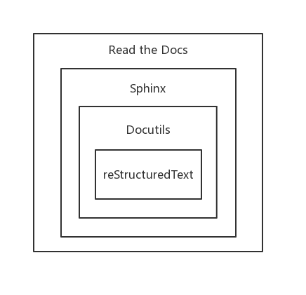

1. reStructuredText 工具链介绍¶
1.1 收拾行囊¶
所谓工欲善其事，必先利其器，在踏上 reStructuredText 的学习之旅前，我们需要收拾行囊，检查一下有没有带好旅途必备的东西。下面提供两套旅行必备清单，没时间解释了，赶紧上车！
懒人版旅行清单
VS Code 版旅行清单
PythonVisual Studio Code文本编辑器Python插件reStructuredText插件
提示
看到页面右上角的 Edit on GitHub 链接了吗？《reStructuredText 漫游指南》全文都是用 reStructuredText 语法写就的，点击该按钮跳转到 GitHub，然后点击 Raw 即可查看本页面的 rst 源码。善用此功能可以在 reStructuredText 的探索之旅中助你一臂之力！
1.2 reStructuredText 漫游路线图¶
行李打包好之后，现在向大家分享我珍藏的地图，老司机保你不迷路！
首先来看位于中央核心位置的 reStructuredText，它是一种轻量级的纯文本标记语言，由 StructuredText 和 Setext 修订演化而来。reStructuredText 最初主要被用于编写 Python 程序的文档字符串（docstring），时至今日，越来越多的人喜欢用它来：
编写行内程序文档（不仅限于
Python语言）快速生成简单网页
撰写独立的文档，比如写一本书
注解
reStructuredText是一个单词，不要加空格，注意大小写。reStructuredText还可以简写为reST，与英语单词休息（rest）发音相同。rst是reStructuredText文件的扩展名。
在 reST 之上是 Python 的 Docutils 模块，该模块集成了 reST 文本解析器。也可以说 Docutils 是 reST 语法规则的 Python 实现。
Sphinx 基于 Docutils 模块，它可以方便地创建优雅美观的大型文档项目，优点如下：
支持多种输出格式
HTMLLaTeXPDF等等
支持文档内以及跨文档引用
方便定义的目录树
自动索引
通过
Pygments模块支持代码高亮强大的内置扩展与第三方扩展
位于 reST 工具链顶端的是 Read the Docs，它为 Sphinx 文档提供托管服务。还可以与 GitHub 连接，只要 GitHub 仓库中的文档发生改动，就会自动重新构建文档，实现了文档的持续集成。最终你可以很方便地把最新文档呈献给公众使用，著名的 requests 库和 Godot Engine 游戏引擎就使用了它来提供文档。
警告
Read the Docs https://readthedocs.org/ 网址的后缀是 org 而不是 com，输入错了可是会提示你付费的哦！
1.3 与 Markdown 的比较¶
在文本标记语言这一大家庭里，前有泰斗，后有新秀，可以说是英豪辈出。下面就来比较一下 reST 和它的小伙伴 Markdown 之间的优缺点。我会尽量保持客观，不至于让大家产生“人比人得死，货比货得扔”的感觉。毕竟我们都是成年人了（小朋友请出去），不用做选择，可以全都要。
Markdown 的优点
流行度高，支持范围广
很多网站都支持
Markdown语法，而reST语法只有少数网站支持，比如优秀的GitHub。包括印象笔记、有道云笔记、为知笔记等等在内的大多数笔记软件都支持
Markdown语法。还有专门的
Markdown文本编辑器可供选择，比如本人最喜欢用的Typora。
更加轻量化
语法规则较少，随手就写，章口就莱（误）。
记忆负担小，学习成本低。
Markdown 的缺点
变体多，没有统一的标准。
比如说写标题的时候有的要加空格
# 标题，有的不要空格#标题。Commonmark 是一个专门为
Markdown研发的标准，但好像没什么人用。
每种工具的
Markdown风格（flavor）不一样。扩展性差，而
reST可以轻松地自定义标记。缺乏语义性标记，而
reST有警告、错误等语义性标记。可移植性差：由于不同风格的存在，使得
pandoc之类的转换工具很难完全把Markdown文档转换为其他标记语言的文档。
2. reStructuredText 语法¶
2.1 reST 基本结构¶
2.1.1 段落¶
段落（paragraph）是被一个或多个空行分隔的文本。与 Python 语言一样，缩进对于 reST 也很重要，同一段落的文字必须靠左对齐且具有相同的缩进。在 reST 中，另起一行写是不会换行的，如果要换行就需要额外空出一行，让上下文形成两个独立的段落。
假如你在 rst 文件中这么写：
我是第一句话。
我是第二节话。
那么你将会得到如下的解析效果：
我是第一句话。我是第二句话。
如果要换行的话，必须在 rst 文件中使用一个或者多个空行分隔两个段落：
我是第一句话。
我是第二句话。
这样才能解析出如下结果：
我是第一句话。
我是第二句话。
注解
在使用英文撰写文档时，另起一行会自动加入一个空格。
即 rst 源文件写成如下形式：
How are you?
I'm fine, and you?
解析效果如下，注意前后两句话之间多出来的空格：
How are you? I'm fine, and you?
有些解析器渲染 rst 文件时对于中文也会额外加入一个空格，比如 VS Code 的 reStructuredText 插件。如果此时我们不想要这个多出来的空格，需要在第一行的末尾加上一个反斜杠 \ 来把空格转义掉。
举个例子，现有 rst 源码：
我是第一句话。
我是第二句话。
上面的源码在某些解析器中的表现如下，注意两句之间多出来了一个空格：
我是第一句话。 我是第二句话。
如果想去掉空格，需要改动 rst 源码：
我是第一句话。\
我是第二句话。
第一句话后面的反斜杠 \ 把解析结果修正为：
我是第一句话。我是第二句话。
对于那些在另起一行时不会自动给中文加空格的解析器，在行尾写一个反斜杠 \ 对最终效果没有任何影响。
2.1.2 标题¶
标题在 reST 中的具体书写规则如下：
标题由可选的上划线、标题内容和下划线组成。
标题需要自成一个段落，即与其他文本至少保持一个空行的间距。
上划线和下划线的长度要相等，并且需要大于等于标题长度。
标题的上划线和下划线可以从这些字符中挑选：
! " # $ % & ' ( ) * + , - . / : ; < = > ? @ [ \ ] ^ _ ` { | } ~其中推荐使用的字符是下面这些：
= - ` : . ' " ~ ^ _ * + #
照顾到一些人的选择困难症，这里直接给出一套 Python 文档风格指南 推荐的写法：
一级标题（部分）：
#做上划线和下划线二级标题（章节）：
*做上划线和下划线三级标题（小节）：
=做下划线四级标题（子小节）：
-做下划线五级标题（子小节的子小节）：
^做下划线六级标题（段落）：
"做下划线
按照 Python 文档风格指南 推荐的写法，标题相关的 rst 源码可以写成如下形式：
###############
一级标题（部分）
###############
***************
二级标题（章节）
***************
三级标题（小节）
===============
四级标题（子小节）
-----------------
五级标题（子小节的子小节）
^^^^^^^^^^^^^^^^^^^^^^^^
六级标题（段落）
"""""""""""""""
注解
其实 Python 文档风格指南 还推荐使用 3 个空格作为文本缩进，使用 4 个空格作为代码缩进。强迫症在此表示强烈不满，所以我在书写 rst 格式的文件时一律采用 4 个空格缩进。
风格指南只是一个指导性的文件，至于在实践中到底应该怎么写，大家可以自行选择，一般以公司规定为准。
2.2 常用行内标记¶
常用的行内标记十分简单：
斜体：被一个星号
*包围的文字拥有斜体样式，比如*斜体*的显示效果是斜体。粗体：被两个星号
**包围的文字拥有粗体样式，比如**粗体**的显示效果是粗体。行内代码：被两个反引号
``包围的文字是行内代码，比如``inline code``的显示效果是inline code。
注解
这些行内标记有一些使用限制：
它们不能嵌套使用。
被包裹的内容不能以空格开始或结束，比如这样是不合法的行内样式
* 内容*。行内标记与其周围文字必须由非单词字符（
non-word character）隔开。比如我是**粗体**是不合法的行内标记，因为“是”和星号之间没有用非单词字符隔开。我们一般使用空格分隔，另外标点符号天然有分隔的功能。如果不想显示多余的空格，需要在空格前加入反斜杠
\转义，举例如下。现有
rst源码：你看这个面，它 **又长又宽**。
渲染效果为：
你看这个面，它 又长又宽。
可见在 又长又宽 的前面多出来了一个空格，这时我们可以使用反斜杠把该空格转义，不让其显示。修改
rst源码如下：你看这个面，它\ **又长又宽**。
显示效果为：
你看这个面，它又长又宽。
空格如愿消失了！
参考资料¶
reStructuredText Primer http://www.sphinx-doc.org/en/master/usage/restructuredtext/basics.html
Why You Shouldn’t Use “Markdown” for Documentation http://www.ericholscher.com/blog/2016/mar/15/dont-use-markdown-for-technical-docs/
Eric Holscher - Documenting your project with Sphinx & Read the Docs - PyCon 2016 https://www.youtube.com/watch?v=hM4I58TA72g
Python’s Style Guide for documenting https://devguide.python.org/documenting/#style-guide